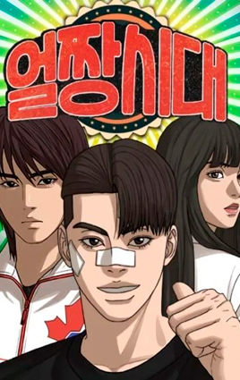

-

Geração Ulzzang
Uma era em que tinha muita confusão e romantismo.
-
How-to-Fight
Hobin, um estudante intimidado, sem querer surgiu com um novo canal no NewTube. A partir desse momento, sua vida mudou. Como ele irá aprender a lutar e fazer um bom conteúdo? Como ele administrará essa mudança em sua vida e até onde essa mudança vai?
-
lookism
Em uma sociedade que favorece a beleza, um estudante leva uma vida dupla, alternando entre dois corpos de aparências totalmente opostas.